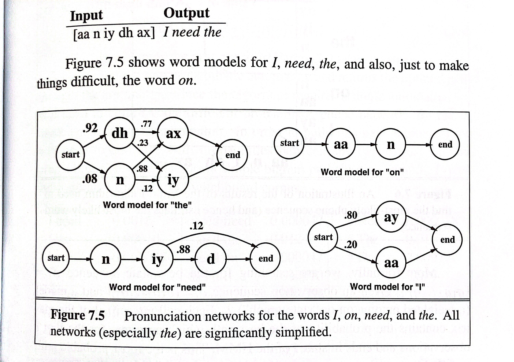
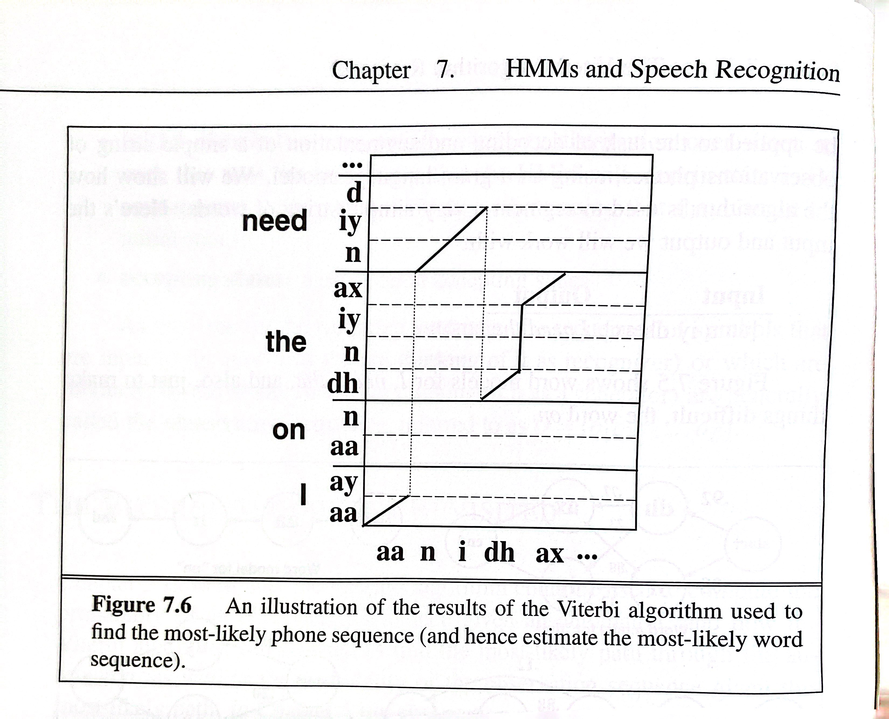

To Continue Our Discussion on Modeling Random Processes
In the previous section, we have talked about how a HMM network could be constructed to model spectral features (in acoustic modeling) and also to elicit POS (part-of-speech) tagging in sequence labeling. These are accomplished through the forward algorithm. And to find the optimal sequence in either one of the scenarios, the backward algorithm or the Viterbi algorithm is applied.
Breaking down what the backward algorithm entails, below is a brief overview:
Backward Probabilities: The backward algorithm computes a set of probabilities, often denoted as values. These probabilities represent the likelihood of observing the remaining part of the sequence, given that the system is in a particular state at a specific time.
Calculation Process: Similar to the forward algorithm, the backward algorithm is computed recursively. It starts from the last observation in the sequence and moves backward in time, updating probabilities for each state. The final result is a set of probabilities representing the likelihood of observing the remaining part of the sequence from each state at each time.
Application in HMMs: The backward probabilities are used in various applications, including: Likelihood Calculation: The backward algorithm is crucial for calculating the likelihood of the observed sequence, which is essential for training HMMs using methods like the Expectation-Maximization (EM) algorithm. Decoding and Inference: The backward probabilities, combined with the forward probabilities, are used to perform tasks like sequence decoding and finding the most likely state sequence given the observed sequence. This is commonly known as the Viterbi algorithm.
Relationship with Forward Algorithm: The forward and backward algorithms are related through their combination in the context of HMMs. The forward and backward probabilities are used together to compute the posterior probabilities of being in a particular state at a specific time given the observed sequence. This information is crucial for various tasks, including parameter estimation and decoding.
In summary, the backward algorithm in HMMs calculates probabilities representing the likelihood of observing the rest of the sequence given the system's state at a specific time. Together with the forward algorithm, it plays a key role in various aspects of HMMs, including training, decoding, and inference.
A Graphic Demonstration of How Viterbi is Applied in Sentence Segmentation
| Viterbi network for a sequence |
|---|
|  |
Recall that the goal of Viterbi algorithm is to find the best state sequence given the set of observed phones . a graph illustration below demonstrates the output of the dynamic programming. Along the y-axis are all the words in the lexicon; inside each word are its states. The x-axis is ordered by time, with one observed the most likely sequence ending at that state. We can find the most-likely state sequence for the entire observation string by looking at the cell in the right-most column that has the highest probability, and tracking back the sequence that produced it.
| Illustration of resulting discovery of the best path |
|---|
|  |
More formally, we are searching for the best state sequence , given an observation sequence and a model (a weighted automaton or "state graph") . Each cell of the matrix contains the probability of the best path which accounts for the first t observations and ends in state i of the HMM. This is the most-probable path out of all possible sequences of states of length :
In order to compute , the Viterbi algorithm assumes the dynamic programming invariant. This assumption states that if the ultimate best path of the entire observation sequence happens to go through a state , that this best path must include the best path up to and including state . This doesn't mean that the best path at any time t is the best path for the whole sequence. A path can look bad at the beginning but turn out to be the best path.
In the book Speech and Language Processing (Jurafsky, Martin et al), it talks about the importance of having the invariant assumption (which is a very important principle in solving problems where dynamic programming is applicable);
it allows us to break down the computation of the optimal path probability in a simple way: each of the best paths at time t is the best extension of each of the paths ending at time t - 1.
In other words, the recurrence relation for the best path at time t ending in state j, , is the maximum of the possible extension of every possible previous path from time t - 1 to time t:
The algorithm as we describe it in takes a sequence of observations, and a single probabilistic automaton, and returns the optimal path through the automaton.
The pseudocode is displayed below
function VITERBI(observations, state_graph) return best_path
num_states <- NUM-OF-STATES(state_graph)
viterbi <- matrix of size (num_states, len(observations))
back_pointer <- matrix of size (num_states, len(observations))
# Initialize the Viterbi matrix with negative infinity
for each state s do
viterbi[s, 0] <- -infinity
viterbi[start_state_index, 0] <- 0.0
# Forward pass
for each time step t from 1 to len(observations) do
for each state s from 1 to num_states do
max_score <- -infinity
max_prev_state <- None
for each previous state prev_state from 1 to num_states do
score <- viterbi[prev_state, t-1]
+ log(a[prev_state, s]) + log(b_s(o_t))
if score > max_score then
max_score <- score
max_prev_state <- prev_state
viterbi[s, t] <- max_score
back_pointer[s, t] <- max_prev_state
# Backtracking to find the best path
best_path <- []
max_final_score <- -infinity
best_final_state <- None
for each state s from 1 to num_states do
if viterbi[s, len(observations)] > max_final_score then
max_final_score <- viterbi[s, len(observations)]
best_final_state <- s
current_state <- best_final_state
for t from len(observations) down to 1 do
best_path.prepend(current_state)
current_state <- back_pointer[current_state, t]
return best_path💭 Again, the Viterbi algorithm is a dynamic programming algorithm used for finding the most likely sequence of hidden states in a Hidden Markov Model (HMM). It determines the best path at each state based on the probabilities of transitioning between states and emitting observations.
When discussing the "best path at state ," it means the most probable sequence of hidden states up to that particular state in the sequence.
Doesn't Represent the Best Path for the Whole Sequence:
The statement implies that choosing the best path at each individual state () doesn't guarantee that the entire sequence is the globally optimal sequence. It's possible that a locally optimal choice at one state doesn't lead to the globally optimal sequence. Connection with Local Maximum in Stochastic Gradient Descent (SGD):
In the context of optimization problems like training machine learning models, SGD is an iterative optimization algorithm. It aims to find the minimum of a loss function by iteratively adjusting model parameters. A local maximum in SGD refers to a situation where the algorithm gets stuck in a suboptimal solution, which may be the best solution in the local vicinity but not globally optimal.
Similarly, in the Viterbi algorithm, choosing the best path at each state may lead to a locally optimal sequence but doesn't ensure that the entire sequence is globally optimal.
Ultimate Optimal Value:
In both cases, there's a concern about achieving the ultimate optimal value. In Viterbi, it's about finding the globally optimal sequence, and in SGD, it's about reaching the global minimum of the loss function (which we will talk about in a separate blog).
In summary, the connection lies in the challenge of achieving a globally optimal solution when making locally optimal choices at each step. Both Viterbi and SGD face the risk of getting stuck in local optima, and the choices made locally may not collectively lead to the globally optimal solution for the entire sequence or model.